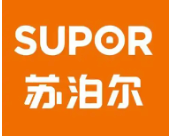
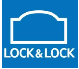
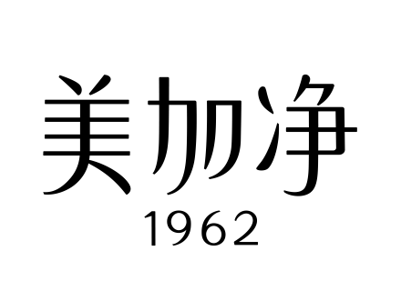
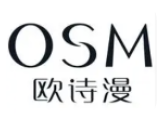
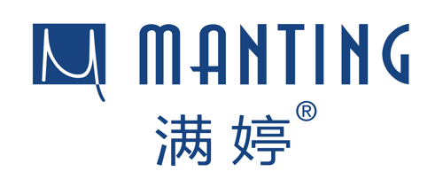

AI PRACTICE / HANGZHOU
洪新哲
懂点设计，懂点产品，也用 AI 把想法做出来。
在创作与业务中实践 AI，也为日常需求做小工具。这里展示项目和作品，也保存想做的事、思考的来路与持续积累的方法。
- AI Native
- 审美判断
- 业务翻译
- 动手验证
2025.09 — 至今
NoDesk AI · 上下文工程师 AIGC 产品 / 运营｜Agent 应用落地
围绕 AIGC 产品与内容生产、企业 Agent 业务流程推进落地。
通过内容方案、效果验证与生产支持，推动苏泊尔、乐扣乐扣、美加净等品牌年框合作。





代表项目
VIBE CODING / PERSONAL PROJECTS
Vibe Coding 项目
从日常问题出发，用 AI 辅助开发。
记录小工具、原型和持续迭代的过程。
访问我的 GitHub ↗
PRACTICE / SELECTED CASES
我的实践与案例
工作里的产品与应用，也有为自己做的小工具。
浏览全部项目 ↗
AIGC 产品构建与落地
从创作需求到生产流程，再到验证与团队使用。
Agent 落地与交付
把业务问题拆成规则、工具和可验证的工作流。
茉酸奶：业务翻译、接口与 Skill 需求、规则试算及评审材料；将门店风险转为巡店决策与执行方案。
Vibe Coding 项目
Vibe Coding · 小工具 · 原型探索
围绕自己的需求，用 AI 辅助开发小工具与 Web 原型，记录从想法、实现到迭代的过程。
AIGC / PRODUCTS & CONTENT
AIGC 产品构建与落地
2026 · NoDesk AI 工作项目
从产品定义、流程设计到验证与团队使用。
NoStudio 让品牌团队在同一空间使用品牌资产、协作创作和审核。Studio Work（原 NoTV）把简报和参考素材变成分镜、镜头和成片。
NoStudio品牌 AI 设计工作空间
团队用品牌规范、商品资料和已审核素材，从营销简报出发制作、审核内容，再按渠道或市场调整。
我的侧重点 · 生产需求与联调验证
- 规则设计
- 梳理商品、卖点、素材与 Skill 的关联；区分产品说明资料和生成参考，让素材选择可检查、问题可追溯。
- 协作推进
- 把素材引用、任务状态等生产问题转成需求、复现步骤与验收条件，协同研发联调和复测。
- 实际产物
- 商品与素材使用规则、需求反馈、联调验证记录和操作指引。平台工程由研发完成。
Studio Work 原 NoTV视频创作智能体
输入创意简报与商品参考，结合创作 Skill 规划分镜、生成镜头，审核后交付成片。
我的侧重点 · 0 到 1 流程构建与产品推进
- 流程与规则
- 负责产品需求与生产流程设计，构建 SKU Skill / Meta Skill；与算法工程团队协作，共同推进产品验证、迭代与落地。
- 生产链路
- 脚本＋SKU Skill → Prompt 与素材自动编排 → CLI / MCP 并发提交 → 审核，以自然语言修改失败单元。
- 团队使用
- 制作杯子、服饰实操录屏与使用指引，将操作问题转成反馈，支持团队上手与流程改进。
- 实际产物
- P0 产品需求稿、SKU Skill / Meta Skill、素材编排方法、生产演示与培训记录。
质量判断与生产成效
把选型、验证和修改连起来，减少无效生成。
模型判断熟悉 Wan、Seedance、Kling、MiniMax H3 等常见模型，按具体版本与任务核验商品保真、人物动作及画面一致性，选择生成、实拍或后期方案。
生产成效通过商品约束和素材引用减少失真与重试，通过 CLI / MCP 并发提交减少逐条操作。
SELECTED WORK
项目案例
工作中的产品与业务实践，以及为自己做的工具。
每个案例记录问题、我的职责、产物与结果。
工作项目
在真实业务中，推进产品与应用落地。
个人探索 · Vibe Coding
从自己的需求出发，做工具、验证想法。
AGENT / AI APPLICATIONS
Agent 业务流程设计与落地
围绕真实业务，推进需求、规则与交付验证。
当前项目：茉酸奶门店督导 Agent。
企业 AI 应用 · 业务方案与评测
茉酸奶 · 门店风险评估与智能巡店 Agent
哪些店需要巡，哪些优先，到店查什么？
把经营、巡检与客诉信息转成风险判断和到店任务，辅助督导安排日程、跟踪整改，解决判断依赖个人经验、任务分散和问题难追踪的痛点。
我负责：业务翻译、接口与 Skill 需求、评测集构建与调优
- 业务方案
- 区分应巡名单、风险优先级和日程安排；拆解月度排期、事件重排与整改复核，明确暂缓、停复营、请假和重复触发等异常。
- 研发协作
- 逐环节定义输入输出、字段映射、接口缺口与验收样例；明确 Skill 编排、工具计算及人工确认的分工，协同算法工程团队实现。
- 评测交付
- 构建 1,339 条门店月度案例和可复算脚本，完成巡检、差评、业绩三维规则批量试算；交付覆盖 88 家门店的评审材料。
- 交付价值
- 已将三维规则的重复核算转为批量试算，集中呈现风险证据与优先建议；另交付任务去重、整改回传与复核方案，为减少重复安排和人工追踪提供依据。
BACKGROUND
背景与经历
2025 届毕业
- 2025.09 — 至今
担任 NoDesk AI 上下文工程师
AIGC 创作与生产流程建设
从品牌图像、视频与数字人创作出发，将生产经验沉淀为 Skill 与工作流；负责 Studio Work（原 NoTV）早期产品流程，参与 NoStudio 的生产需求与联调验证。
AIGC / PRODUCTS & CONTENT
AIGC 内容作品
图像、视频与数字人内容制作。
每个案例说明产出形式、我的分工与项目状态。
A TEAM ACHIEVEMENT
阿里「生意管家杯」视频组第一
作为电商 AIGC 视频制作核心参赛成员，随团队获得视频组第一。我的工作涵盖 Skill / Prompt、视频生产、剪辑质检与现场演示。
公众号原文（可在微信内尝试打开）商品场景、剧情短片、创意品宣与服饰展示。点击作品查看完整视频与项目分工。
相关品牌视频项目 查看品牌索引
品牌视频与方案验证项目索引；精选样片见上方，具体分工在作品详情中说明。
- 乐扣乐扣
- 满婷
- 欧诗漫
- 匹克
- 美加净
- 野兽派
品牌长图、场景套图与商品详情页视觉探索。点击查看完整图片、应用场景与我的分工。
DIGITAL HUMAN / 制作实践
人物口播与生成镜头的结合
以数字人口播串联头皮、发丝与商品画面。展示人物表达、声音和生成素材如何组成一条完整内容。
- 我的工作
- 确认人物形象与场景，生成、修改数字人口播，处理声音、人物比例与背景一致性问题。
- 团队协作
- 剪辑同事完成字幕、画面组合与包装。
- 案例状态
- 4 月 15 日群内修改版；人物画面含 AI 生成。
模型选型与能力边界判断
结合实测与 Badcase，判断模型在商品保真、文字细节、人物动作及画面一致性上的适用范围，选择生成、实拍或后期处理方案。
杯壶饮具｜美妆护肤｜家电厨具｜奶粉营养品｜洗发护发｜鞋服｜家居收纳
以上为部分代表作品，涵盖生产与方案验证。A GROWING TOOLBOX
Skill 库
个人构建与日常收录
从需要什么，到能做出什么。
暂时没有匹配的 Skill。试试「视频」「照片」，或切换到全部。
PROMPT NOTES
常用提示词
基于实践整理的模板草稿。
替换方括号中的内容后使用，持续补充。
商品视频 · 生成前的素材与脚本检查 展开模板 ＋
请根据以下资料检查商品视频的生成准备情况： 商品资料：[产品事实与卖点] 脚本：[脚本内容] 参考素材：[素材列表及对应说明] 逐镜头列出：表达目标、商品状态、所需素材、生成约束与人工检查点。 明确区分已确认事实、待确认信息和模型可能生成错误的部分。 素材不足时列出缺口，不补造产品功能；先选一条代表性镜头进行验证，再建议批量生成。
业务 Agent · 需求与验收条件梳理 展开模板 ＋
请协助拆解以下业务 Agent 需求： 使用者：[角色] 业务场景：[场景描述] 现有数据与工具：[已确认的输入和工具] 预期结果：[希望完成的任务] 依次整理：业务目标、输入字段、判断规则、工具需求、输出形式、异常分支、人工确认点和验收条件。 对每项注明“已确认”或“待确认”，不得假设尚未接入的数据或能力已经可用。 最后列出需要向业务方与研发分别确认的问题。
新品 SKU Skill · 商品理解与素材映射 展开模板 ＋
请根据以下信息，先整理新品 SKU Skill 的构建计划： 商品资料：[产品说明、颜色、结构与状态] 卖点：[希望表达的产品特点] 素材：[图片 / 视频及用途说明] 品类规则：[已有规则，没有则留空] 1. 分开列出已确认的商品事实、待确认信息和资料缺口。 2. 合并可共同表达的卖点，逐项给出展示方式与所需参考素材。 3. 区分产品说明资料与生成参考；复杂动作说明是否需要视频参考。 4. 输出 SKU Skill 的规则结构、素材映射与质检要点，等待人工确认。 5. 选择一条代表性脚本验证，记录问题后再更新 Skill。 素材不足或商品结构不清楚时，列出问题，不补造事实。
基于个人 Meta Skill 构建实践整理的通用模板，不含具体品牌素材或内部配置。
A GROWING NOTEBOOK
个人积累
把想做的事、思考的来路和实践留在这里。
从一个想法开始，持续补充背景、判断、尝试与下一步。
暂时没有匹配的笔记，试试“素材”“排期”或“模型”。
这里保留思考与实践的来路，记录会随新的理解持续更新。去小红书看分享 ↗
A LITTLE ABOUT ME
你好，我是洪新哲。
我于 2025 年毕业于建筑学专业，目前在杭州，就职于 AI startup NoDesk AI。建筑学的训练让我习惯同时考虑表达、结构与实现，也影响着我今天做 AI 创作与应用的方式。
工具越强，越需要自己的判断。
当 AI 能承担越来越多的执行工作，我更看重的是：什么值得做，什么样的结果算好，以及它是否真正解决了问题。
审美帮助我判断表达的质量，对业务的理解帮助我判断结果的价值。我希望形成自己的标准，并为最终的选择负责。
审美判断
从构图、节奏到品牌风格，判断生成结果是否合适，把审美落实到选片与修改中。
业务翻译
把业务诉求梳理成流程、输入输出和接口需求，用原型与规则和算法、开发团队对齐。
动手验证
用 Vibe Coding、Skill 和工作流把想法做出来，在实际使用中验证，再逐步改进。
拆解与收敛
分层管理上下文，理清目标、事实与约束；拆出流程和异常规则，用测试集明确交付标准。
自驱学习
在真实问题中尝试新模型和工具，把有效方法与失败教训沉淀成可复用的记录。
看看我的个人积累 ↗